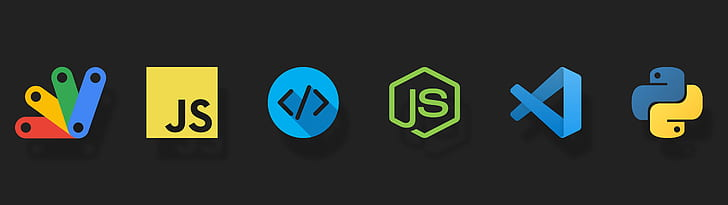

BECAME A DEVELOPER

BACK-END DEVELOPER:
Python
Python is a general-purpose programming language commonly used to build the back-end of software programs and web applications. A flexible, user-friendly, and powerful language, it’s one that all back-end programmers should at least familiarize themselves with.
Java
Java is another general-purpose programming language often used in the back-end of application development. It was built to be deployable across a wide range of environments and is flexible enough to support complex, high-performing software projects.
PHP
PHP (Hypertext Preprocessor) is a server-side programming language, often used to create dynamic websites that change content based on the user or browser requesting the page. PHP dynamically constructs web pages on the server from database content. This process is the opposite of static web pages, which are stored on servers in their entirety and look the same to all visitors.
Other Languages
Of course, there are many other programming languages out there that back-end developers might prefer. Other popular options include Ruby, a high-level language for quickly building web and mobile applications, C, a lower-level language (as well as the most popular language currently), and .NET, a framework developed by Microsoft for building websites and web apps.
In addition, a back-end developer may utilize programming languages specifically for database management, such as SQL or JSON.